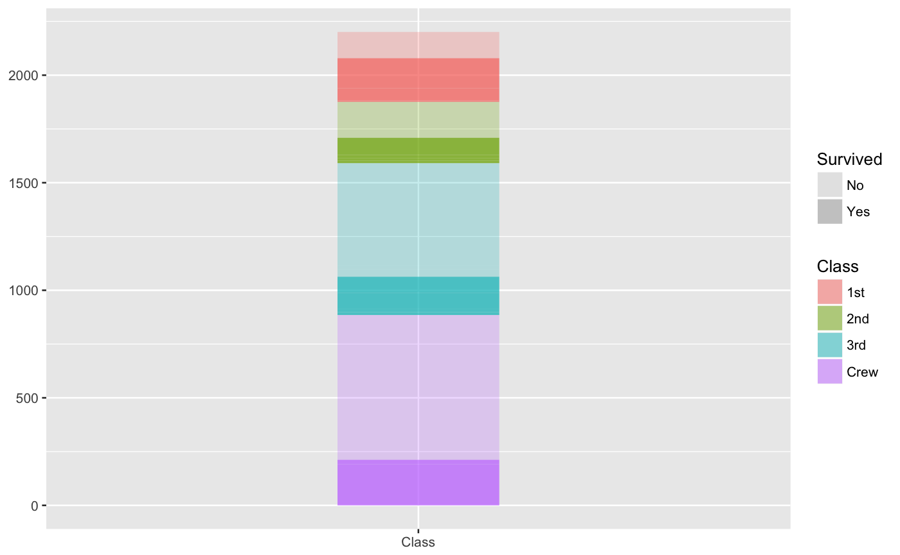
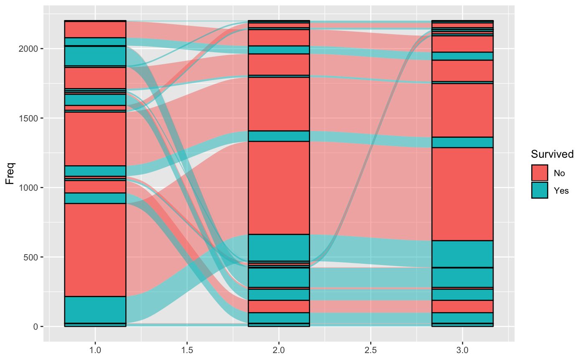

Lodes at intersections of alluvia and strata
geom_alluvium receives a dataset of the horizontal (x) and
vertical (y, ymin, ymax) positions of the lodes
of an alluvial diagram, the intersections of the alluvia with the strata.
It plots rectangles for these lodes of a provided width.
geom_lode(mapping = NULL, data = NULL, stat = "alluvium", position = "identity", width = 1/3, axis_width = NULL, na.rm = FALSE, show.legend = NA, inherit.aes = TRUE, ...)
Arguments
| mapping | Set of aesthetic mappings created by |
|---|---|
| data | The data to be displayed in this layer. There are three options: If A A |
| stat | The statistical transformation to use on the data; override the default. |
| position | Position adjustment, either as a string, or the result of a call to a position adjustment function. |
| width | Numeric; the width of each stratum, as a proportion of the distance between axes. Defaults to 1/3. |
| axis_width | Deprecated; alias for |
| na.rm | Logical:
if |
| show.legend | logical. Should this layer be included in the legends?
|
| inherit.aes | If |
| ... | Additional arguments passed to |
Aesthetics
geom_alluvium, geom_flow, geom_lode, and
geom_stratum understand the following aesthetics (required aesthetics
are in bold):
xyyminymaxalphacolourfilllinetypesizegroup
group is used internally; arguments are ignored.
See also
layer for additional arguments and
stat_alluvium and
stat_stratum for the corresponding stats.
Other alluvial geom layers: geom_alluvium,
geom_flow, geom_stratum
Examples
# one axis ggplot(as.data.frame(Titanic), aes(weight = Freq, axis = Class)) + geom_lode(aes(fill = Class, alpha = Survived)) + scale_x_continuous(breaks = 1, labels = c("Class")) + scale_alpha_manual(values = c(.25, .75))gg <- ggplot(as.data.frame(Titanic), aes(weight = Freq, axis1 = Class, axis2 = Sex, axis3 = Age, fill = Survived)) # alluvia and lodes gg + geom_alluvium() + geom_lode()